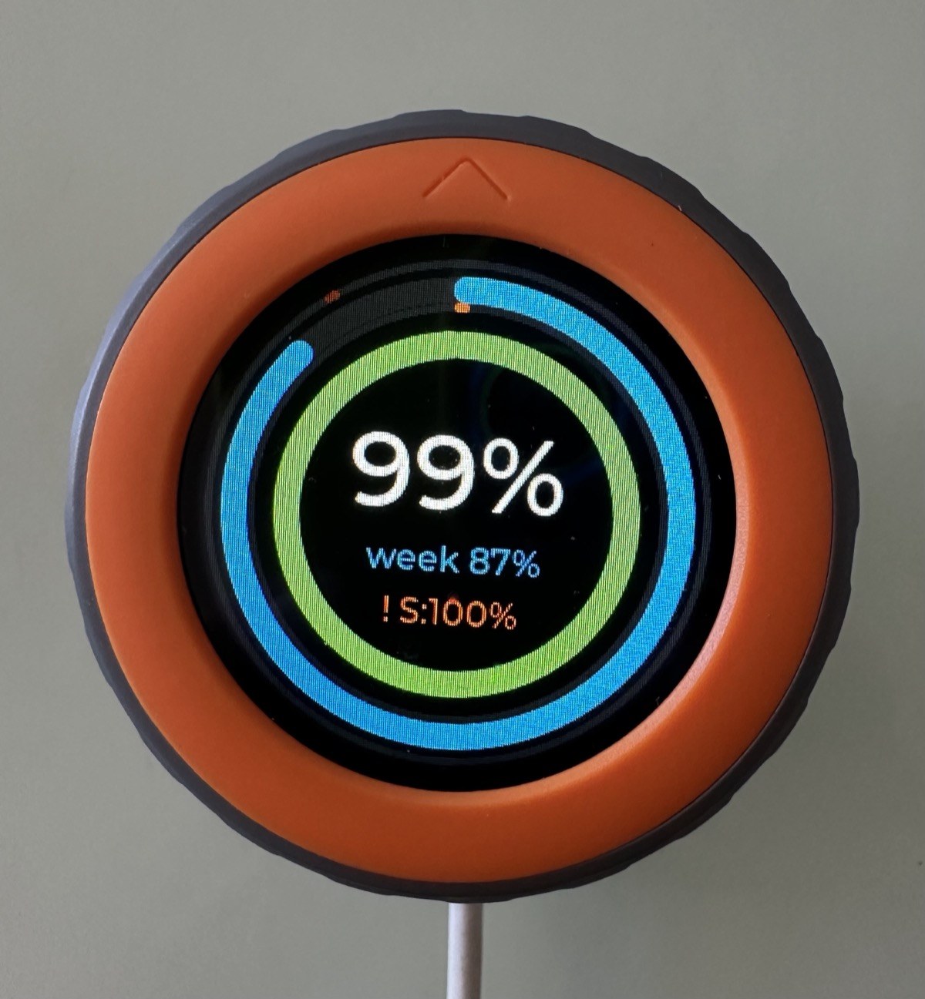

Claudial of Service
The Maker saga: 1. Claude Makes Things · 2. Claudial of Service
My Mac slowed to a snail's pace. Activity Monitor said a tiny helper for my desk gadget was using 50 gigabytes of memory. I had stopped that helper days ago. Or I thought I had.
"I just killed the daemon with 50gb used memory"
The gadget is a round dial on my desk that shows how much of my AI allowance I have left. I set it up last week with the help of Claude, in about half an hour. It has two halves: the dial, and a small helper program on the Mac that fetches the numbers and sends them over Bluetooth. Programs like that, which run quietly in the background, are called daemons.
My Mac has 64 gigabytes of memory. The helper, whose whole job is sending one short message now and then, had taken almost 80% of it, and everything else was getting squeezed. There's a name for an attack that floods a machine until it can't do its real work: denial of service. Mine came from inside my house.
I killed the helper in Activity Monitor, pointed an AI at the Claudial folder and asked:
i just killed the daemon with 50gb used memory what could cause this
It ignored the folder. It went looking through the other daemons my build tools leave running and ended with a question back to me. My Mac has a lot of daemons.
I added one more word:
i just killed the claudial daemon with 50gb used memory what could cause this
Within minutes it had an answer.
Not one daemon, but two
The helper had been running for seven days straight, undetected, since the evening I set it up.
But I had stopped it?! Several times. Whenever I wanted the dial I started the helper in a terminal window, and when I was done I stopped it. As far as I knew, nothing was running.
Except on the first evening, the AI installing everything had started a copy of its own to test with. It started it in the background, detached from everything, so that it would keep going while the AI worked on other things. It kept going after the AI was done, too. I never saw it, because it wasn't in any window I had open.
For seven days there were two helpers, both trying to talk to the same dial.
Half an hour of work, seven days of garbage
The ghost's own log shows how long it was useful: half an hour, on the first evening. About as long as it took me to set the whole thing up.
Then I started my own copy, and the dial went with it. The dial can only hold one connection at a time, and while it's connected it stops announcing itself over Bluetooth. To the ghost, it simply vanished. The developer had thought of that: the helper checks whether another copy is already running. On a Mac, though, that check does nothing, so nothing stopped two of them from starting.
So the ghost kept looking. Search, rest, search again. It looked while the dial sat on my desk talking to its sibling. It looked while I showed the dial to my colleagues. It looked while the dial was in my bag. By the time I killed it, it had searched more than thirty thousand times and never found it once. Seven days of collecting nothing but garbage.
Haven't I been here before?
This has happened before, in the summer. In Tomato Maxing III, my phone warned me that a free allowance I didn't know I was spending was nearly gone. The culprit was my robot vacuum. A docked vacuum stops listening on Wi-Fi to save power, so every time my setup asked "are you cleaning?" and got no answer, it went and asked again over the internet. Each question cost a little of the allowance.
Same shape here: a program asking for a device that can't answer, over and over. But what exactly was each question costing?
Death by a thousand cuts
I handed the leak to a fresh Claude session, with the whole story and my own guess at why nobody had noticed:
it won't show up as a big leak just as a small leak that incrementally grows and grows and grows
It measured instead of guessing. The leak wasn't in the searching itself. While the helper searches, the Mac reports every Bluetooth gadget in range that announces itself: phones, headphones, anything nearby, dozens of times a second. For each report, the Bluetooth library inside the helper takes hold of a small record and never lets go. Tiny, every time. Around the clock for seven days, it's 50 gigabytes.
"It would just make it rarer"
With the vacuum, the fix was to ask less often and never fall back to the internet. The allowance stopped draining.
The measurements confirmed my suspicion that the same trick wouldn't work here. Waiting longer between searches only means fewer hours spent searching. The memory still leaks, just more slowly: the same 50 gigabytes, spread across a month instead of a week.
It wouldn't solve the issue. It would just make it rarer.
The real fix was to stop searching. Once the helper has met the dial, it remembers it and tells the Mac: connect me when this one shows up. The Mac holds that request and waits quietly. No searching, no reports, nothing to leak. The memory stayed flat. A second change makes sure only one copy of the helper can ever run: start another one and it says so and quits.
Both changes are on their way back to the developer as a pull request, a proposed change the project's owner can accept.
Last time, the thing burning my allowance was a vacuum asleep in the corner. This time it was a daemon lurking in the shadows, still running days later, still looking for a dial that was sitting right next to it.
I have to stop here. I need to watch my five-hour window, my allowance that refills every five hours.
